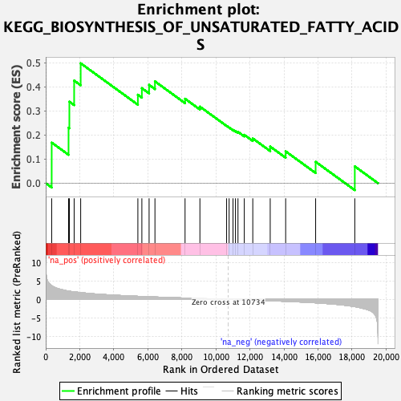

| | | Dataset | PFS |
| Phenotype | NoPhenotypeAvailable |
| Upregulated in class | na_pos |
| GeneSet | KEGG_BIOSYNTHESIS_OF_UNSATURATED_FATTY_ACIDS |
| Enrichment Score (ES) | 0.49856326 |
| Normalized Enrichment Score (NES) | 1.3972094 |
| Nominal p-value | 0.085910656 |
| FDR q-value | 1.0 |
| FWER p-Value | 0.994 |
Table: GSEA Results Summary

Fig 1: Enrichment plot: KEGG_BIOSYNTHESIS_OF_UNSATURATED_FATTY_ACIDS
Profile of the Running ES Score & Positions of GeneSet Members on the Rank Ordered List
| SYMBOL | RANK IN GENE LIST | RANK METRIC SCORE | RUNNING ES | CORE ENRICHMENT | | 1 | FADS1 | 351 | 3.740 | 0.1689 | Yes |
| 2 | ACOT1 | 1342 | 2.253 | 0.2306 | Yes |
| 3 | PECR | 1390 | 2.219 | 0.3391 | Yes |
| 4 | ACOX1 | 1671 | 2.041 | 0.4267 | Yes |
| 5 | ELOVL2 | 2055 | 1.832 | 0.4986 | Yes |
| 6 | ELOVL6 | 5415 | 0.831 | 0.3679 | No |
| 7 | SCD5 | 5650 | 0.785 | 0.3951 | No |
| 8 | ACOT7 | 6075 | 0.709 | 0.4088 | No |
| 9 | ACOT2 | 6419 | 0.645 | 0.4234 | No |
| 10 | HACD1 | 8188 | 0.366 | 0.3510 | No |
| 11 | SCD | 9061 | 0.240 | 0.3183 | No |
| 12 | HACD2 | 10630 | 0.014 | 0.2386 | No |
| 13 | BAAT | 10778 | -0.006 | 0.2314 | No |
| 14 | ELOVL5 | 11006 | -0.037 | 0.2216 | No |
| 15 | HADHA | 11149 | -0.056 | 0.2171 | No |
| 16 | TECR | 11298 | -0.078 | 0.2134 | No |
| 17 | FADS2 | 11669 | -0.132 | 0.2010 | No |
| 18 | ACOT4 | 12168 | -0.208 | 0.1859 | No |
| 19 | ACOX3 | 13192 | -0.376 | 0.1522 | No |
| 20 | YOD1 | 14100 | -0.534 | 0.1324 | No |
| 21 | ACAA1 | 15861 | -0.936 | 0.0889 | No |
| 22 | HSD17B12 | 18162 | -1.978 | 0.0698 | No |
Table: GSEA details [plain text format]
Fig 2: KEGG_BIOSYNTHESIS_OF_UNSATURATED_FATTY_ACIDS: Random ES distribution
Gene set null distribution of ES for KEGG_BIOSYNTHESIS_OF_UNSATURATED_FATTY_ACIDS